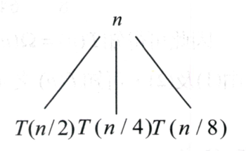
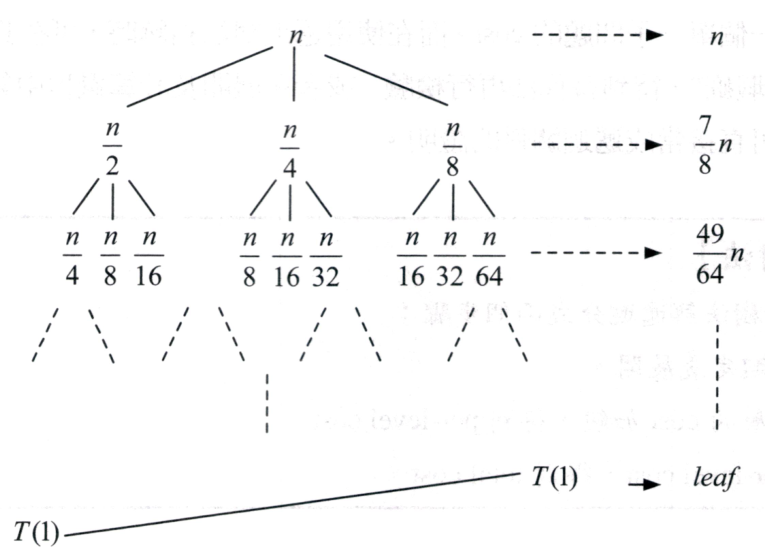

Recurrence Relation是為利用自身函數來表達自己函數的方法。
例如:
費式數列(Fibonacci number)
\(
F(n)=F(n-1)+F(n-2)
\)
Substitution Method(替代法)
策略
- 經驗法則猜結果(asymptotic)
- 用mathematic induction找出常數(asymptotic的邊界條件)，來證明此猜測是對的。
Question
Determine asymptotic from
\(
T(n)=2T(\lfloor \frac{n}{2} \rfloor)+n,
\;
T(1)=1
\)
ans
Guess
\(
T(n)=O(n\lg n)\)
Let
\(
\exists c\in \mathbb{R}
\rightarrow
T(n)\leq cn\lg n
\)
Mathematic Induction
Suppose that \(
T(\lfloor \frac{n}{2}\rfloor)
\leq
c\lfloor \frac{n}{2} \rfloor
\lg
\lfloor \frac{n}{2} \rfloor
\)
existed.
\(
\Rightarrow
T(n)
\leq
2\cdot c\lfloor \frac{n}{2} \rfloor
\lg
\lfloor \frac{n}{2} \rfloor
+ n
\)
\(
\leq
2\cdot c\frac{n}{2}
\lg
\frac{n}{2}
+n
\)
\(
=
cn(\lg n-\lg 2)+n
\)
\(
=
cn\lg n - cn\lg 2 +n
\)
(這裡已經可以看出式子在n很大時，\( n\lg n \)為主導。)
when
\(
c=2,\;n\geq 2
\rightarrow
T(2)=2T(1)+2=4\leq 2\cdot 2\lg 2
\) existed.
Recursion-tree Method(遞迴樹法)
母問題分解成多個子問題，然後子問題當成母問題再繼續分解成多個子問題，直到子問題不能再被分解為止。
策略
- 展開recursion relation
- 從母問題分解出來的子問題，那層的子問題的加總，可當作這層的成本花費。
- 每層成本加起來，可得到整顆樹的花費。
Question
Give asymptotic tight bound for
\( T(n)=T(\frac{n}{2})+T(\frac{n}{4})+T(\frac{n}{8})+n \) (assume that \( T(n) \) is constant for sufficiently small \( n \).)
ans
將\( T(n) \)展開得

再將子問題展開得

(樹的最左邊層數較多，最右邊層數越少。)
(最右邊直的那排為每層的花費)
則總花費為
\( T(n)=n+\frac{7}{8}n+\frac{49}{64}n+\dots+\text{ leaf } \)
當n夠大時，是前面幾項在主導。
計算Big-Oh
\(
\Rightarrow
T(n)\leq
n+\frac{7}{8}n+\frac{49}{64}n+\dots
=
\frac{n}{1-\frac{7}{8}}
=8n
\)
\(
\Rightarrow
T(n)=O(n)
\)
計算Omega
\( n\leq T(n)=n+\frac{7}{8}n+\frac{49}{64}n+\dots+\text{ leaf } \)
\(
\Rightarrow
T(n) = \Omega(n)
\)
\(
\therefore
T(n)=\Theta(n)
\)